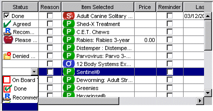

public class OATable extends JTable implements DragGestureListener, DropTargetListener
Full support for Drag and Drop (DND), and options to control how it works.
OATable supports a multi selection list, by supplying a second Hub that is used to contain the selected objects.
OATable allows for creating custom renderers. Each component can have its own renderer, and OATable
has its own own renderer that is called for each cell.
Also see OATable.getRenderer(...) to be able to customize any cell.

Example:
Create an OATable that will display a list (Hub) of Employees
Hub hubEmployee = new Hub(Employee.class);
Hub hubDepartment = new Hub(Department.class);
hubDepartment.setLink(hubEmployee);
OATable table = new OATable();
OALabel lbl = new OALabel(hubEmployee, "Id");
table.addColumn("Id", 14, lbl);
OATextField txt = new OATextField(hubEmployee, "firstName");
table.addColumn("First Name", 14, txt);
OAComboBox cbo = new OAComboBox(hubDepartment, "name");
table.addColumn("Department", 22, cbo);
OACheckBox chk = new OACheckBox(hubEmployee, "fullTime");
table.addColumn("FT", 6, chk);
table.setPreferredSize(6, 3, true); // 6 rows, 3 columns, plus width of scrollbar
table.setAutoResizeMode(JTable.AUTO_RESIZE_LAST_COLUMN);
panel.add(new JScrollPane(table));
table.getTableHeader().setReorderingAllowed(false);
Note: use this to get the original column position
col = columnModel.getColumn(col).getModelIndex();
For more information about this package, see documentation.
OATableComponent,
Serialized FormJTable.AccessibleJTable, JTable.DropLocation, JTable.PrintModeJComponent.AccessibleJComponentContainer.AccessibleAWTContainerComponent.AccessibleAWTComponent, Component.BaselineResizeBehavior, Component.BltBufferStrategy, Component.FlipBufferStrategy| Modifier and Type | Field and Description |
|---|---|
protected boolean |
bAllowDrag |
protected boolean |
bAllowDrop |
protected boolean |
bAllowSorting |
boolean |
bDEBUG |
protected boolean |
bEnableUndo |
static Border |
BORDER_Change |
static Border |
BORDER_Focus |
static Border |
BORDER_Purple |
static Border |
BORDER_Red |
static Border |
BORDER_Select |
static Border |
BORDER_Yellow |
protected boolean |
bRemoveDragObject |
protected boolean |
bResizeCounterColumn |
protected OACheckBox |
chkSelection |
protected AbstractButton |
cmdDoubleClick |
static Color |
COLOR_Change_Background |
static Color |
COLOR_Change_Foreground |
static Color |
COLOR_Even |
static Color |
COLOR_Focus |
static Color |
COLOR_Focus_Forground |
static Color |
COLOR_MouseOver |
static Color |
COLOR_Odd |
protected Vector<OATableColumn> |
columns |
protected com.viaoa.jfc.TableController |
control |
boolean |
debug |
protected DragSource |
dragSource |
protected DropTarget |
dropTarget |
protected com.viaoa.jfc.PanelHeaderRenderer |
headerRenderer |
protected ConcurrentHashMap<String,Long> |
hmRowColumnChanged |
protected com.viaoa.hub.Hub |
hub |
protected com.viaoa.hub.HubFilter |
hubFilter |
protected com.viaoa.hub.Hub |
hubFilterMaster |
protected com.viaoa.hub.Hub |
hubSelect |
protected com.viaoa.hub.Hub |
hubViewable |
protected static Icon[] |
iconAsc |
protected static Icon[] |
iconDesc |
protected boolean |
includeScrollBar |
protected int |
mouseOverColumn |
protected int |
mouseOverRow |
protected com.viaoa.jfc.OATable.OATableModel |
oaTableModel |
protected JPopupMenu |
popupMenu |
protected int |
prefCols |
protected int |
prefRows |
protected OATable |
tableLeft |
protected OATable |
tableRight |
protected OATableColumn |
tcCount |
AUTO_RESIZE_ALL_COLUMNS, AUTO_RESIZE_LAST_COLUMN, AUTO_RESIZE_NEXT_COLUMN, AUTO_RESIZE_OFF, AUTO_RESIZE_SUBSEQUENT_COLUMNS, autoCreateColumnsFromModel, autoResizeMode, cellEditor, cellSelectionEnabled, columnModel, dataModel, defaultEditorsByColumnClass, defaultRenderersByColumnClass, editingColumn, editingRow, editorComp, gridColor, preferredViewportSize, rowHeight, rowMargin, rowSelectionAllowed, selectionBackground, selectionForeground, selectionModel, showHorizontalLines, showVerticalLines, tableHeaderlistenerList, TOOL_TIP_TEXT_KEY, ui, UNDEFINED_CONDITION, WHEN_ANCESTOR_OF_FOCUSED_COMPONENT, WHEN_FOCUSED, WHEN_IN_FOCUSED_WINDOWaccessibleContext, BOTTOM_ALIGNMENT, CENTER_ALIGNMENT, LEFT_ALIGNMENT, RIGHT_ALIGNMENT, TOP_ALIGNMENTABORT, ALLBITS, ERROR, FRAMEBITS, HEIGHT, PROPERTIES, SOMEBITS, WIDTH| Modifier | Constructor and Description |
|---|---|
|
OATable()
Create a new Table.
|
protected |
OATable(boolean bAddHack) |
|
OATable(com.viaoa.hub.Hub hub)
Create a new Table that is bound to a Hub.
|
|
OATable(com.viaoa.hub.Hub hub,
boolean bAddHack)
Create a new Table that is bound to a Hub.
|
protected |
OATable(JComponent compDummy) |
| Modifier and Type | Method and Description |
|---|---|
protected Component |
_getRenderer(Component comp,
JTable table,
Object value,
boolean isSelected,
boolean hasFocus,
int row,
int column,
boolean wasChanged,
boolean wasMouseOver) |
protected void |
_myClearSelectionAndLeadAnchor() |
protected void |
_setHubPos(int row) |
OATableColumn |
add(OATableComponent comp)
Create a new column using an OATableComponent.
|
OATableColumn |
add(String heading,
int columns,
OATableComponent comp)
Create a new column using an OATableComponent.
|
OATableColumn |
add(String heading,
int columns,
String path)
Create a new column using a path.
|
OATableColumn |
add(String heading,
int columns,
String path,
OATableComponent comp)
Create a new column using an OATableComponent.
|
OATableColumn |
add(String heading,
int columns,
String path,
OATableComponent comp,
int index)
Create a new column using an OATableComponent.
|
OATableColumn |
add(String heading,
int columns,
String path,
String fmt)
Create a new column using a path.
|
OATableColumn |
addColumn(OATableComponent comp)
Create a new column using an OATableComponent.
|
OATableColumn |
addColumn(String heading,
int columns,
OATableComponent comp)
Create a new column using an OATableComponent.
|
OATableColumn |
addColumn(String heading,
int columns,
String path)
Create a new column using a path.
|
OATableColumn |
addColumn(String heading,
int columns,
String path,
OATableComponent comp)
Create a new column using an OATableComponent.
|
OATableColumn |
addColumn(String heading,
int columns,
String path,
OATableComponent comp,
int index)
Create a new column using an OATableComponent.
|
OATableColumn |
addColumn(String heading,
int columns,
String path,
String fmt)
Create a new column using a path.
|
OATableColumn |
addColumn(String heading,
OATableComponent comp) |
protected OATableColumn |
addColumnMain(String heading,
int cols,
String path,
OATableComponent oaComp,
TableCellEditor editComp,
int index,
String fmt)
Main method for adding a new Table Column.
|
OATableColumn |
addCounterColumn()
Add a column that will that will use checkboxes to show selected rows.
|
OATableColumn |
addCounterColumn(String heading,
int width) |
void |
addListener(OATableListener l)
Add a listener that is called to customize the rendering component for a cell.
|
void |
addNotify() |
void |
addSelectionColumn(com.viaoa.hub.Hub hubSelect,
String heading,
int width)
Add a column that will that will use checkboxes to show selected rows.
|
void |
addSelectionColumn(com.viaoa.hub.Hub hubSelect,
String heading,
int width,
boolean bAllowRemovingFromSelectHub) |
void |
allowDnd(boolean b)
Flag to enable Drag and Drop.
|
void |
allowDnD(boolean b)
Flag to enable Drag and Drop.
|
void |
calcForPopup() |
void |
calcPreferredSize()
Determine preferred size based on number of preferred number of columns and rows.
|
void |
changeSelection_OLD(int rowIndex,
int columnIndex,
boolean toggleUsingControlKey,
boolean extendUsingShiftKey) |
void |
changeSelection(int rowIndex,
int columnIndex,
boolean toggleUsingControlKey,
boolean extendUsingShiftKey) |
protected void |
configureEnclosingScrollPane() |
protected JTableHeader |
createDefaultTableHeader() |
void |
customizeRenderer(JLabel lbl,
JTable table,
Object value,
boolean isSelected,
boolean hasFocus,
int row,
int column,
boolean wasChanged,
boolean wasMouseOver) |
void |
customizeRenderer(JLabel lbl,
Object value,
boolean isSelected,
boolean hasFocus,
int row,
int column,
boolean wasChanged,
boolean wasMouseOver)
This is called by getRenderer(..) after the default settings have been set.
|
protected void |
displayPopupMenu(OATableColumn tc,
Point pt) |
void |
dragEnter(DropTargetDragEvent e)
Used to support drag and drop (DND).
|
void |
dragExit(DropTargetEvent e)
Used to support drag and drop (DND).
|
void |
dragGestureRecognized(DragGestureEvent e)
Used to support drag and drop (DND).
|
void |
dragOver(DropTargetDragEvent e)
Used to support drag and drop (DND).
|
void |
drop(DropTargetDropEvent e)
Used to support drag and drop (DND).
|
void |
dropActionChanged(DropTargetDragEvent e)
Used to support drag and drop (DND).
|
boolean |
editCellAt(int row,
int column,
EventObject e)
Overwritten to set active object in Hub.
|
boolean |
getAllowDrag()
Flag to enable Dragging.
|
boolean |
getAllowDrop()
Flag to enable Dropping.
|
boolean |
getAllowDrop(com.viaoa.hub.Hub hubDrag,
Object objectDrag,
com.viaoa.hub.Hub hubDrop) |
boolean |
getAllowSorting() |
protected OATableColumn[] |
getAllTableColumns() |
TableCellEditor |
getCellEditor(int row,
int column) |
TableCellRenderer |
getCellRenderer(int row,
int column)
JTable method used to get the renderer for a cell.
|
protected String |
getColumnHeaderToolTipText(OATableColumn tc,
Point pt) |
protected String |
getColumnHeaderToolTipText(OATableComponent comp,
String tt) |
int |
getColumnIndex(OATableComponent c)
Returns the column position for an OATableComponent.
|
String |
getConfirmMessage() |
OAJfcController |
getController() |
OATableComponent |
getDisplayedColumnComponent(int pos) |
int |
getDisplayedColumnCount() |
int |
getDisplayedColumnWidth(int pos) |
AbstractButton |
getDoubleClickButton()
Button to perform a doClick() when table clickCount == 2
|
boolean |
getEnableEditors() |
boolean |
getEnableUndo() |
com.viaoa.hub.Hub |
getHub()
Returns Hub that is bound to Table.
|
boolean |
getKeepSorted() |
OATable |
getLeftTable() |
OATableListener[] |
getListeners() |
com.viaoa.hub.Hub |
getMasterFilterHub() |
JPopupMenu |
getMyComponentPopupMenu() |
Object |
getObjectAt(int row,
int col) |
protected JPopupMenu |
getPopupMenu() |
int |
getPreferredColumns()
Number of columns that should be visible when determinng the preferred size of the Table.
|
int |
getPreferredRows()
Number of rows that should be visible when determinng the preferred size of the Table.
|
boolean |
getRemoveDragObject()
Flag to have a Dragged object removed from Hub.
|
Component |
getRenderer_OLD(JTable table,
Object value,
boolean isSelected,
boolean hasFocus,
int row,
int column)
Can be overwritten to customize the component used to renderer a Table cell.
|
Component |
getRenderer(Component comp,
JTable table,
Object value,
boolean isSelected,
boolean hasFocus,
int row,
int column,
boolean wasChanged,
boolean wasMouseOver)
Called by getCellRender to customize the renderer.
|
OATable |
getRightTable() |
com.viaoa.hub.Hub |
getSelectHub()
Separate Hub that can contain selected objects.
|
boolean |
getShowChanges()
Flag to track changes to row,col (cells).
|
String |
getToolTipText(int row,
int col,
String defaultValue) |
String |
getToolTipText(MouseEvent event) |
com.viaoa.hub.Hub |
getViewableHub() |
protected boolean |
isAllSelected() |
protected boolean |
isAnySelected() |
protected void |
loadColumnProperties() |
protected void |
loadColumnSetup(int pos) |
protected void |
myClearSelectionAndLeadAnchor() |
protected void |
myClearSelectionAndLeadAnchor1() |
protected void |
myClearSelectionAndLeadAnchor2() |
protected void |
onAddColumn(OATableColumn tc) |
void |
onDoubleClick()
Method that is called whenever mouse click count = 2.
|
protected void |
onFind() |
protected void |
onHeadingClick(OATableColumn tc,
MouseEvent e,
Point pt) |
protected void |
onHeadingMouseReleased(MouseEvent e,
Point pt) |
protected void |
onHeadingRightClick(OATableColumn tc,
Point pt) |
protected void |
onLoadDefault() |
void |
onMouseOver(int row,
int column,
MouseEvent evt) |
protected void |
onRemoveColumn(OATableColumn tc) |
protected void |
performSort() |
protected boolean |
processKeyBinding(KeyStroke ks,
KeyEvent e,
int condition,
boolean pressed) |
protected void |
processMouseEvent(MouseEvent e)
Capture double click and call double click button.
|
protected void |
processMouseMotionEvent(MouseEvent e) |
void |
refreshFilter() |
void |
removeColumn(int pos)
Remove a column from Table.
|
void |
removeListener(OATableListener l)
Remove a listener that is called to customize the rendering component for a cell.
|
void |
removeSort() |
void |
requestFocus()
Overwritten to resume edit mode when focus is regained.
|
void |
resetColumn(OATableComponent comp) |
protected void |
resetFilterHub() |
void |
resetFilters()
Clear all of the filter values.
|
void |
resizeColumnsToFitHeading()
Columns will be resized to be at least the size of the heading text.
|
void |
resizeCounterColumn() |
protected void |
saveColumnProperties() |
protected void |
saveColumnSetup(int pos) |
void |
setAllowDnd(boolean b)
Flag to enable Drag and Drop.
|
void |
setAllowDnD(boolean b)
Flag to enable Drag and Drop.
|
void |
setAllowDrag(boolean b)
Flag to enable Dragging.
|
void |
setAllowDrop(boolean b)
Flag to enable Dropping.
|
void |
setAllowSorting(boolean b)
2006/10/12 If you would like to allow for sorting on a clicked column heading.
|
void |
setBackground(Color bg) |
void |
setChanged(int row,
int col) |
void |
setChanged(int row,
int col,
Object newValue) |
void |
setCheckFocus(boolean b) |
void |
setColumnHeading(int col,
String heading)
Change the heading for a column number.
|
void |
setColumnProperties(com.viaoa.util.OAProperties props,
String name)
The properties used to store the settings.
|
void |
setColumnPropertyPath(int col,
String propertyPath)
Set the property path used to display values for a column.
|
void |
setColumnWidth(int col,
int w)
Change the width for a column number, based on character width.
|
void |
setComponentPopupMenu(JPopupMenu popup) |
void |
setConfirmMessage(String msg) |
void |
setDoubleClickButton(AbstractButton cmd)
Button to perform a doClick() when table clickCount == 2
|
void |
setEnabled(boolean enabled) |
void |
setEnableEditors(boolean b) |
void |
setEnableUndo(boolean b) |
void |
setFilterMasterHub(com.viaoa.hub.Hub hubFilterMaster) |
void |
setHub(com.viaoa.hub.Hub h)
Sets Hub that is bound to Table.
|
protected boolean |
setHubPos(int row) |
void |
setKeepSorted(boolean b) |
protected void |
setLeftTable(OATable table) |
void |
setMasterFilterHub(com.viaoa.hub.Hub hubFilterMaster) |
void |
setMultiSelectControlKey(boolean b)
Mulitselect flag to know if clicking a row will always act like controlkey was used.
|
void |
setPreferredColumns(int cols)
Number of columns that should be visible when determinng the preferred size of the Table.
|
void |
setPreferredRows(int rows)
Number of rows that should be visible when determinng the preferred size of the Table.
|
void |
setPreferredSize(int rows,
int cols)
Number of columns and rows that should be visible when determinng the preferred size of the
Table.
|
void |
setPreferredSize(int rows,
int cols,
boolean includeScrollBar)
Number of columns and rows that should be visible when determinng the preferred size of the
Table.
|
void |
setRemoveDragObject(boolean b)
Flag to have a Dragged object removed from Hub.
|
protected void |
setRightTable(OATable table) |
void |
setRowHeight(int rowHeight) |
void |
setSelectHub(com.viaoa.hub.Hub hub)
Separate Hub that can contain selected objects.
|
void |
setSelectHub(com.viaoa.hub.Hub hub,
boolean bAllowRemovingFromSelectHub) |
void |
setShowChanges(boolean b) |
void |
setSortColumn(OATableComponent oaComp,
boolean bAsc,
int pos) |
void |
setToolTipText(String text) |
protected void |
unconfigureEnclosingScrollPane() |
protected void |
updateViewableHub() |
boolean |
wasChanged(int row,
int col) |
addColumn, addColumnSelectionInterval, addRowSelectionInterval, clearSelection, columnAdded, columnAtPoint, columnMarginChanged, columnMoved, columnRemoved, columnSelectionChanged, convertColumnIndexToModel, convertColumnIndexToView, convertRowIndexToModel, convertRowIndexToView, createDefaultColumnModel, createDefaultColumnsFromModel, createDefaultDataModel, createDefaultEditors, createDefaultRenderers, createDefaultSelectionModel, createScrollPaneForTable, doLayout, editCellAt, editingCanceled, editingStopped, getAccessibleContext, getAutoCreateColumnsFromModel, getAutoCreateRowSorter, getAutoResizeMode, getCellEditor, getCellRect, getCellSelectionEnabled, getColumn, getColumnClass, getColumnCount, getColumnModel, getColumnName, getColumnSelectionAllowed, getDefaultEditor, getDefaultRenderer, getDragEnabled, getDropLocation, getDropMode, getEditingColumn, getEditingRow, getEditorComponent, getFillsViewportHeight, getGridColor, getIntercellSpacing, getModel, getPreferredScrollableViewportSize, getPrintable, getRowCount, getRowHeight, getRowHeight, getRowMargin, getRowSelectionAllowed, getRowSorter, getScrollableBlockIncrement, getScrollableTracksViewportHeight, getScrollableTracksViewportWidth, getScrollableUnitIncrement, getSelectedColumn, getSelectedColumnCount, getSelectedColumns, getSelectedRow, getSelectedRowCount, getSelectedRows, getSelectionBackground, getSelectionForeground, getSelectionModel, getShowHorizontalLines, getShowVerticalLines, getSurrendersFocusOnKeystroke, getTableHeader, getUI, getUIClassID, getUpdateSelectionOnSort, getValueAt, initializeLocalVars, isCellEditable, isCellSelected, isColumnSelected, isEditing, isRowSelected, moveColumn, paramString, prepareEditor, prepareRenderer, print, print, print, print, print, removeColumn, removeColumnSelectionInterval, removeEditor, removeNotify, removeRowSelectionInterval, resizeAndRepaint, rowAtPoint, selectAll, setAutoCreateColumnsFromModel, setAutoCreateRowSorter, setAutoResizeMode, setCellEditor, setCellSelectionEnabled, setColumnModel, setColumnSelectionAllowed, setColumnSelectionInterval, setDefaultEditor, setDefaultRenderer, setDragEnabled, setDropMode, setEditingColumn, setEditingRow, setFillsViewportHeight, setGridColor, setIntercellSpacing, setModel, setPreferredScrollableViewportSize, setRowHeight, setRowMargin, setRowSelectionAllowed, setRowSelectionInterval, setRowSorter, setSelectionBackground, setSelectionForeground, setSelectionMode, setSelectionModel, setShowGrid, setShowHorizontalLines, setShowVerticalLines, setSurrendersFocusOnKeystroke, setTableHeader, setUI, setUpdateSelectionOnSort, setValueAt, sizeColumnsToFit, sizeColumnsToFit, sorterChanged, tableChanged, updateUI, valueChangedaddAncestorListener, addVetoableChangeListener, computeVisibleRect, contains, createToolTip, disable, enable, firePropertyChange, firePropertyChange, firePropertyChange, fireVetoableChange, getActionForKeyStroke, getActionMap, getAlignmentX, getAlignmentY, getAncestorListeners, getAutoscrolls, getBaseline, getBaselineResizeBehavior, getBorder, getBounds, getClientProperty, getComponentGraphics, getComponentPopupMenu, getConditionForKeyStroke, getDebugGraphicsOptions, getDefaultLocale, getFontMetrics, getGraphics, getHeight, getInheritsPopupMenu, getInputMap, getInputMap, getInputVerifier, getInsets, getInsets, getListeners, getLocation, getMaximumSize, getMinimumSize, getNextFocusableComponent, getPopupLocation, getPreferredSize, getRegisteredKeyStrokes, getRootPane, getSize, getToolTipLocation, getToolTipText, getTopLevelAncestor, getTransferHandler, getVerifyInputWhenFocusTarget, getVetoableChangeListeners, getVisibleRect, getWidth, getX, getY, grabFocus, hide, isDoubleBuffered, isLightweightComponent, isManagingFocus, isOpaque, isOptimizedDrawingEnabled, isPaintingForPrint, isPaintingOrigin, isPaintingTile, isRequestFocusEnabled, isValidateRoot, paint, paintBorder, paintChildren, paintComponent, paintImmediately, paintImmediately, print, printAll, printBorder, printChildren, printComponent, processComponentKeyEvent, processKeyEvent, putClientProperty, registerKeyboardAction, registerKeyboardAction, removeAncestorListener, removeVetoableChangeListener, repaint, repaint, requestDefaultFocus, requestFocus, requestFocusInWindow, requestFocusInWindow, resetKeyboardActions, reshape, revalidate, scrollRectToVisible, setActionMap, setAlignmentX, setAlignmentY, setAutoscrolls, setBorder, setDebugGraphicsOptions, setDefaultLocale, setDoubleBuffered, setFocusTraversalKeys, setFont, setForeground, setInheritsPopupMenu, setInputMap, setInputVerifier, setMaximumSize, setMinimumSize, setNextFocusableComponent, setOpaque, setPreferredSize, setRequestFocusEnabled, setTransferHandler, setUI, setVerifyInputWhenFocusTarget, setVisible, unregisterKeyboardAction, updateadd, add, add, add, add, addContainerListener, addImpl, addPropertyChangeListener, addPropertyChangeListener, applyComponentOrientation, areFocusTraversalKeysSet, countComponents, deliverEvent, findComponentAt, findComponentAt, getComponent, getComponentAt, getComponentAt, getComponentCount, getComponents, getComponentZOrder, getContainerListeners, getFocusTraversalKeys, getFocusTraversalPolicy, getLayout, getMousePosition, insets, invalidate, isAncestorOf, isFocusCycleRoot, isFocusCycleRoot, isFocusTraversalPolicyProvider, isFocusTraversalPolicySet, layout, list, list, locate, minimumSize, paintComponents, preferredSize, printComponents, processContainerEvent, processEvent, remove, remove, removeAll, removeContainerListener, setComponentZOrder, setFocusCycleRoot, setFocusTraversalPolicy, setFocusTraversalPolicyProvider, setLayout, transferFocusDownCycle, validate, validateTreeaction, add, addComponentListener, addFocusListener, addHierarchyBoundsListener, addHierarchyListener, addInputMethodListener, addKeyListener, addMouseListener, addMouseMotionListener, addMouseWheelListener, bounds, checkImage, checkImage, coalesceEvents, contains, createImage, createImage, createVolatileImage, createVolatileImage, disableEvents, dispatchEvent, enable, enableEvents, enableInputMethods, firePropertyChange, firePropertyChange, firePropertyChange, firePropertyChange, firePropertyChange, firePropertyChange, getBackground, getBounds, getColorModel, getComponentListeners, getComponentOrientation, getCursor, getDropTarget, getFocusCycleRootAncestor, getFocusListeners, getFocusTraversalKeysEnabled, getFont, getForeground, getGraphicsConfiguration, getHierarchyBoundsListeners, getHierarchyListeners, getIgnoreRepaint, getInputContext, getInputMethodListeners, getInputMethodRequests, getKeyListeners, getLocale, getLocation, getLocationOnScreen, getMouseListeners, getMouseMotionListeners, getMousePosition, getMouseWheelListeners, getName, getParent, getPeer, getPropertyChangeListeners, getPropertyChangeListeners, getSize, getToolkit, getTreeLock, gotFocus, handleEvent, hasFocus, imageUpdate, inside, isBackgroundSet, isCursorSet, isDisplayable, isEnabled, isFocusable, isFocusOwner, isFocusTraversable, isFontSet, isForegroundSet, isLightweight, isMaximumSizeSet, isMinimumSizeSet, isPreferredSizeSet, isShowing, isValid, isVisible, keyDown, keyUp, list, list, list, location, lostFocus, mouseDown, mouseDrag, mouseEnter, mouseExit, mouseMove, mouseUp, move, nextFocus, paintAll, postEvent, prepareImage, prepareImage, processComponentEvent, processFocusEvent, processHierarchyBoundsEvent, processHierarchyEvent, processInputMethodEvent, processMouseWheelEvent, remove, removeComponentListener, removeFocusListener, removeHierarchyBoundsListener, removeHierarchyListener, removeInputMethodListener, removeKeyListener, removeMouseListener, removeMouseMotionListener, removeMouseWheelListener, removePropertyChangeListener, removePropertyChangeListener, repaint, repaint, repaint, resize, resize, setBounds, setBounds, setComponentOrientation, setCursor, setDropTarget, setFocusable, setFocusTraversalKeysEnabled, setIgnoreRepaint, setLocale, setLocation, setLocation, setName, setSize, setSize, show, show, size, toString, transferFocus, transferFocusBackward, transferFocusUpCycleprotected int prefCols
protected int prefRows
protected com.viaoa.hub.Hub hub
protected com.viaoa.hub.Hub hubFilterMaster
protected com.viaoa.hub.HubFilter hubFilter
protected com.viaoa.hub.Hub hubSelect
protected com.viaoa.jfc.TableController control
protected com.viaoa.jfc.OATable.OATableModel oaTableModel
protected Vector<OATableColumn> columns
protected boolean includeScrollBar
protected boolean bAllowDrag
protected boolean bAllowDrop
protected boolean bRemoveDragObject
protected DropTarget dropTarget
protected DragSource dragSource
protected com.viaoa.jfc.PanelHeaderRenderer headerRenderer
protected JPopupMenu popupMenu
protected boolean bAllowSorting
protected static Icon[] iconDesc
protected static Icon[] iconAsc
public boolean bDEBUG
public static final Color COLOR_Odd
public static final Color COLOR_Even
public static final Color COLOR_Focus
public static final Color COLOR_MouseOver
public static final Color COLOR_Change_Foreground
public static final Color COLOR_Change_Background
public static final Border BORDER_Change
public static final Color COLOR_Focus_Forground
public static final Border BORDER_Focus
public static final Border BORDER_Red
public static final Border BORDER_Purple
public static final Border BORDER_Yellow
public static final Border BORDER_Select
protected com.viaoa.hub.Hub hubViewable
protected ConcurrentHashMap<String,Long> hmRowColumnChanged
public boolean debug
protected OATableColumn tcCount
protected boolean bResizeCounterColumn
protected OACheckBox chkSelection
protected AbstractButton cmdDoubleClick
protected boolean bEnableUndo
protected OATable tableLeft
protected OATable tableRight
protected int mouseOverRow
protected int mouseOverColumn
public OATable()
public OATable(com.viaoa.hub.Hub hub)
public OATable(com.viaoa.hub.Hub hub,
boolean bAddHack)
bAddHack - if true (default) then register [Enter] key and consumeprotected OATable(JComponent compDummy)
protected OATable(boolean bAddHack)
bAddHack - if true (default) then register [Enter] key and consumepublic void setEnabled(boolean enabled)
setEnabled in class JComponentpublic void setAllowSorting(boolean b)
b - public boolean getAllowSorting()
public void resizeColumnsToFitHeading()
public String getToolTipText(MouseEvent event)
getToolTipText in class JTablepublic void resetFilters()
protected JTableHeader createDefaultTableHeader()
createDefaultTableHeader in class JTableprotected void performSort()
public com.viaoa.hub.Hub getHub()
public void setKeepSorted(boolean b)
public boolean getKeepSorted()
public void setHub(com.viaoa.hub.Hub h)
public OAJfcController getController()
protected void resetFilterHub()
public Object getObjectAt(int row, int col)
public com.viaoa.hub.Hub getViewableHub()
protected void updateViewableHub()
public void setAllowDnd(boolean b)
public void setAllowDnD(boolean b)
public void allowDnd(boolean b)
public void allowDnD(boolean b)
public boolean getAllowDrop()
public void setAllowDrop(boolean b)
public boolean getAllowDrag()
public void setAllowDrag(boolean b)
public void setRemoveDragObject(boolean b)
public boolean getRemoveDragObject()
public void dragGestureRecognized(DragGestureEvent e)
dragGestureRecognized in interface DragGestureListenerpublic void dragEnter(DropTargetDragEvent e)
dragEnter in interface DropTargetListenerpublic void dragOver(DropTargetDragEvent e)
dragOver in interface DropTargetListenerpublic void dropActionChanged(DropTargetDragEvent e)
dropActionChanged in interface DropTargetListenerpublic void dragExit(DropTargetEvent e)
dragExit in interface DropTargetListenerpublic boolean getAllowDrop(com.viaoa.hub.Hub hubDrag,
Object objectDrag,
com.viaoa.hub.Hub hubDrop)
public void drop(DropTargetDropEvent e)
drop in interface DropTargetListenerpublic void setSelectHub(com.viaoa.hub.Hub hub)
public void setSelectHub(com.viaoa.hub.Hub hub,
boolean bAllowRemovingFromSelectHub)
public com.viaoa.hub.Hub getSelectHub()
public int getPreferredColumns()
public void setPreferredColumns(int cols)
public int getPreferredRows()
public void setPreferredRows(int rows)
public void setPreferredSize(int rows,
int cols)
public void setPreferredSize(int rows,
int cols,
boolean includeScrollBar)
includeScrollBar - add the width of a scrollbar to the preferred width of the Table.public TableCellRenderer getCellRenderer(int row, int column)
public boolean getShowChanges()
public void setShowChanges(boolean b)
public void setChanged(int row,
int col)
public void setChanged(int row,
int col,
Object newValue)
public boolean wasChanged(int row,
int col)
public void setRowHeight(int rowHeight)
setRowHeight in class JTablepublic Component getRenderer_OLD(JTable table, Object value, boolean isSelected, boolean hasFocus, int row, int column)
public void addListener(OATableListener l)
public void removeListener(OATableListener l)
public OATableListener[] getListeners()
public void calcPreferredSize()
public void calcForPopup()
public int getColumnIndex(OATableComponent c)
public void setColumnHeading(int col,
String heading)
public void setColumnWidth(int col,
int w)
public void setColumnPropertyPath(int col,
String propertyPath)
public void resetColumn(OATableComponent comp)
public OATableColumn addCounterColumn()
public OATableColumn addCounterColumn(String heading, int width)
public void resizeCounterColumn()
public void addSelectionColumn(com.viaoa.hub.Hub hubSelect,
String heading,
int width)
hubSelect - heading - width - public void addSelectionColumn(com.viaoa.hub.Hub hubSelect,
String heading,
int width,
boolean bAllowRemovingFromSelectHub)
protected boolean isAllSelected()
protected boolean isAnySelected()
public void changeSelection(int rowIndex,
int columnIndex,
boolean toggleUsingControlKey,
boolean extendUsingShiftKey)
changeSelection in class JTablepublic void setMultiSelectControlKey(boolean b)
bMultiSelectControlKey - if true, then all row clicks will automaically turn on ctrol key.public void changeSelection_OLD(int rowIndex,
int columnIndex,
boolean toggleUsingControlKey,
boolean extendUsingShiftKey)
public OATableColumn addColumn(OATableComponent comp)
public OATableColumn add(OATableComponent comp)
public OATableColumn addColumn(String heading, int columns, OATableComponent comp)
heading - column headingwidth - of column based on average character width.public OATableColumn addColumn(String heading, OATableComponent comp)
public OATableColumn add(String heading, int columns, OATableComponent comp)
heading - column headingwidth - of column based on average character width.public OATableColumn addColumn(String heading, int columns, String path, OATableComponent comp)
heading - column headingwidth - of column based on average character width.path - Set the property path used to display values for a column. This could be necessary
when it can not be determined by the columns OATableComponent.public OATableColumn add(String heading, int columns, String path, OATableComponent comp)
heading - column headingwidth - of column based on average character width.path - Set the property path used to display values for a column. This could be necessary
when it can not be determined by the columns OATableComponent.public OATableColumn addColumn(String heading, int columns, String path, OATableComponent comp, int index)
heading - column headingcolumns - of column based on average character width.path - Set the property path used to display values for a column. This could be necessary
when it can not be determined by the columns OATableComponent.index - column number, -1 to append to existing columnspublic OATableColumn add(String heading, int columns, String path, OATableComponent comp, int index)
heading - column headingcolumns - of column based on average character width.path - Set the property path used to display values for a column. This could be necessary
when it can not be determined by the columns OATableComponent.index - column number, -1 to append to existing columnspublic OATableColumn addColumn(String heading, int columns, String path)
heading - column headingcolumns - of column based on average character width.path - Set the property path used to display values for a column.public OATableColumn addColumn(String heading, int columns, String path, String fmt)
heading - column headingcolumns - of column based on average character width.path - Set the property path used to display values for a column.public OATableColumn add(String heading, int columns, String path)
heading - column headingcolumns - of column based on average character width.path - Set the property path used to display values for a column.public OATableColumn add(String heading, int columns, String path, String fmt)
heading - column headingcolumns - of column based on average character width.path - Set the property path used to display values for a column.protected OATableColumn addColumnMain(String heading, int cols, String path, OATableComponent oaComp, TableCellEditor editComp, int index, String fmt)
public void removeColumn(int pos)
public void setDoubleClickButton(AbstractButton cmd)
public AbstractButton getDoubleClickButton()
public void setComponentPopupMenu(JPopupMenu popup)
setComponentPopupMenu in class JComponentpublic JPopupMenu getMyComponentPopupMenu()
protected void myClearSelectionAndLeadAnchor()
protected void _myClearSelectionAndLeadAnchor()
protected void myClearSelectionAndLeadAnchor1()
protected void myClearSelectionAndLeadAnchor2()
protected void processMouseEvent(MouseEvent e)
processMouseEvent in class JComponentgetDoubleClickButton()protected void processMouseMotionEvent(MouseEvent e)
processMouseMotionEvent in class JComponentpublic void onDoubleClick()
public void setEnableEditors(boolean b)
public boolean getEnableEditors()
public void setFilterMasterHub(com.viaoa.hub.Hub hubFilterMaster)
public com.viaoa.hub.Hub getMasterFilterHub()
public void setMasterFilterHub(com.viaoa.hub.Hub hubFilterMaster)
public void refreshFilter()
public void setConfirmMessage(String msg)
public String getConfirmMessage()
public void setEnableUndo(boolean b)
public boolean getEnableUndo()
protected boolean setHubPos(int row)
protected void _setHubPos(int row)
public boolean editCellAt(int row,
int column,
EventObject e)
editCellAt in class JTablepublic void setCheckFocus(boolean b)
public void requestFocus()
requestFocus in class JComponentpublic void setColumnProperties(com.viaoa.util.OAProperties props,
String name)
props - name - prefix used for storing properties, unique name for this table.protected void loadColumnProperties()
protected void saveColumnProperties()
protected void displayPopupMenu(OATableColumn tc, Point pt)
protected void saveColumnSetup(int pos)
protected void loadColumnSetup(int pos)
protected void onAddColumn(OATableColumn tc)
protected void onRemoveColumn(OATableColumn tc)
protected void onLoadDefault()
protected void onFind()
protected JPopupMenu getPopupMenu()
public void setSortColumn(OATableComponent oaComp, boolean bAsc, int pos)
public void removeSort()
public int getDisplayedColumnCount()
public OATableComponent getDisplayedColumnComponent(int pos)
public int getDisplayedColumnWidth(int pos)
protected String getColumnHeaderToolTipText(OATableColumn tc, Point pt)
protected String getColumnHeaderToolTipText(OATableComponent comp, String tt)
protected void onHeadingRightClick(OATableColumn tc, Point pt)
protected void setLeftTable(OATable table)
public OATable getLeftTable()
protected void setRightTable(OATable table)
public OATable getRightTable()
protected OATableColumn[] getAllTableColumns()
protected void onHeadingClick(OATableColumn tc, MouseEvent e, Point pt)
protected void onHeadingMouseReleased(MouseEvent e, Point pt)
public void setBackground(Color bg)
setBackground in class JComponentprotected void configureEnclosingScrollPane()
configureEnclosingScrollPane in class JTableprotected void unconfigureEnclosingScrollPane()
unconfigureEnclosingScrollPane in class JTableprotected boolean processKeyBinding(KeyStroke ks, KeyEvent e, int condition, boolean pressed)
processKeyBinding in class JTablepublic TableCellEditor getCellEditor(int row, int column)
getCellEditor in class JTablepublic void setToolTipText(String text)
setToolTipText in class JComponentpublic void onMouseOver(int row,
int column,
MouseEvent evt)
public Component getRenderer(Component comp, JTable table, Object value, boolean isSelected, boolean hasFocus, int row, int column, boolean wasChanged, boolean wasMouseOver)
comp - table - value - isSelected - hasFocus - row - column - wasChanged - wasMouseOver - which is called by this method after it sets the defaults.protected Component _getRenderer(Component comp, JTable table, Object value, boolean isSelected, boolean hasFocus, int row, int column, boolean wasChanged, boolean wasMouseOver)
public void customizeRenderer(JLabel lbl, Object value, boolean isSelected, boolean hasFocus, int row, int column, boolean wasChanged, boolean wasMouseOver)
Copyright © 1999–2019 ViaOA. All rights reserved.